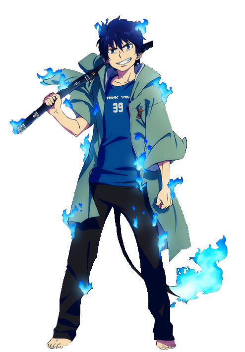
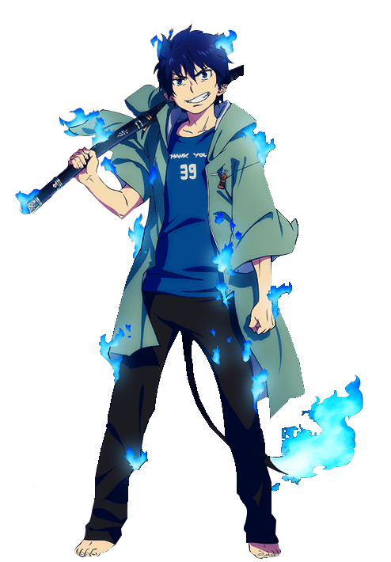

Rin memiliki rambut hitam legam berantakan (biru gelap di anime) yang menyapu kulit pucat dan mata biru yang intens. Sejak menggunakan Kurikara untuk pertama kalinya, Rin mulai menunjukkan sejumlah sifat fisik yang mengisyaratkan sifat iblisnya dalam bentuk manusia seperti gigi taring yang menonjol, telinga yang sedikit runcing, dan ekor yang panjang, hitam, dan berbulu.
Dalam bentuk Iblisnya, Rin mendapatkan dua api biru seperti tanduk yang mengambang di atas kepalanya, telinga seperti peri panjang, dan pupil mata merah, sementara irisnya tetap berwarna biru tua. Api biru juga berkobar di tempat-tempat lain di tubuhnya, sebagian besar di ujung ekor dan di pundaknya, serta pedangnya.
Sebelum pergi ke True Cross Academy, lemari pakaian Rin terdiri dari hoodie biru sederhana di atas kaus merah muda dan sepasang celana jeans hitam dengan rantai di sampingnya, memberikan kesan sifat pemberontak. Dia juga terlihat mengenakan jaket putih dengan saku besar dan berbagai dekorasi di atasnya serta sepasang sarung tangan hitam tanpa jari. Karena seringnya dia berkelahi, Rin terlihat dengan bantuan band di pipi dan jari-jarinya, luka yang biasanya dirawat oleh Yukio.
Saat berada di True Cross Academy, Rin mengenakan seragam sekolah, yang terdiri dari kemeja putih, dasi longgar, jaket hitam, dan celana hitam. Dia juga terlihat membawa pedangnya, Kurikara, dalam lengan merah dengan tali hitam cross-body. Di kelas, ia sesekali terlihat dengan poninya disematkan sehingga ia bisa membaca studinya.
Tak lama setelah tahun baru, Kurikara rusak, melepaskan kekuatan penuh Rin. Dalam bentuk iblis penuhnya, ia memiliki rambut biru pucat yang pudar menjadi putih di bagian bawah. Warna matanya berubah dari biru tua ke warna apinya juga dan pupilnya menjadi merah sepenuhnya, sementara matanya mendapatkan bentuk seperti segitiga yang dimiliki manusia yang dimiliki oleh Setan. Dia memiliki dua tonjolan di dahinya. Pakaian baru yang ia kenakan adalah seragam keamanan True Cross yang dapat membuatnya tidak terlihat jika tudung dipasang, dibuat oleh Mephisto sendiri. Ketika hati iblisnya tidak disembunyikan, itu muncul dalam bentuk yang mengingatkan hati manusia yang sebenarnya. Warnanya biru dan memiliki beberapa tips di atasnya, yang terlihat seperti mahkota. Di tengah "mahkota" ini, ada nyala api biru yang menyala.


 
